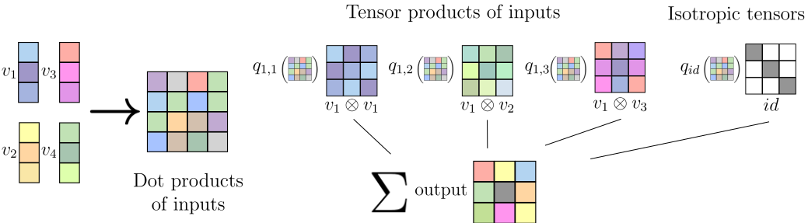
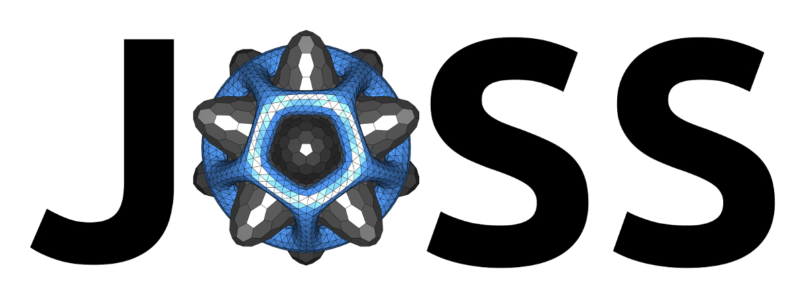
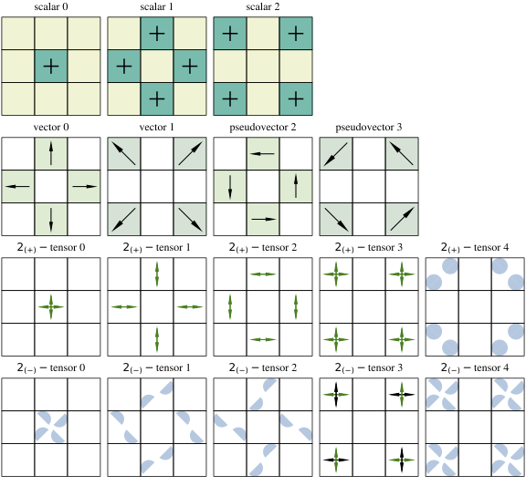
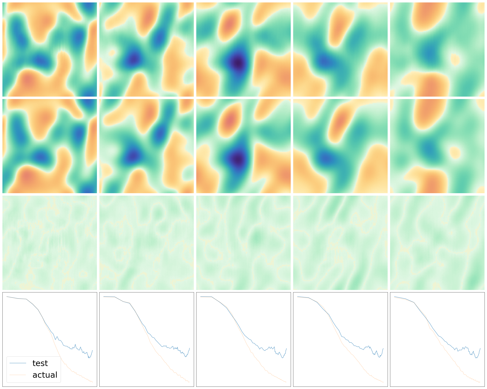
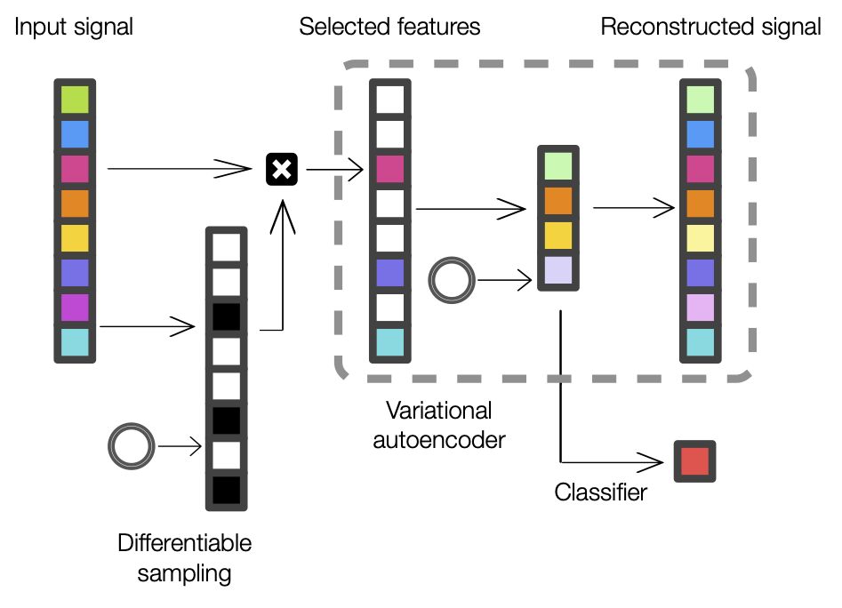

My current research interests are in applying machine learning methods that leverage geometric structure and symmetries in data to biological problems, particularly the mechanical interactions of cells during embryonic development.
I have a background in equivariant machine learning, and my dissertation is titled "Learning O(d)-Equivariant Cartesian Tensor Functions".
Outside of work I enjoy playing volleyball, watching movies, and reading the news. You can find me at wg2492 (at) columbia.edu, or in my office 931 in the School of Social Work building, 1255 Amsterdam Ave, New York, NY 10027.
Research

A polynomial of vector inputs and a 2-tensor (matrix) output.
Tensor learning with orthogonal, Lorentz, and symplectic symmetries Wilson G. Gregory, Josué Tonelli-Cueto, Nicholas F. Marshall, Andrew S. Lee, Soledad Villar, International Conference on Learning Representations (ICLR)
https://openreview.net/forum?id=1FCZ4f8dAY Published, 2026
A characterization of tensor polynomials that are equivariant to the orthogonal group, the indefinite orthogonal group, and the symplectic group.
We then use this characterization for applications in materials science, theoretical computer science, and time series analysis.

ginjax: E(d)-Equivariant CNN for Tensor Images Wilson G. Gregory, Kaze W. K. Wong, David W. Hogg, Soledad Villar, Journal of Open Source Software, 10(112), 8129,
https://doi.org/10.21105/joss.08129 Published, 2025
The code base for geometric image net published as an open source package.

The rotation/reflection invariant filters of the geometric image net.
Equivariant geometric convolutions for dynamical systems on vector and tensor images Wilson G. Gregory, David W. Hogg, Ben Blum-Smith, Maria Teresa Arias, Kaze W.K. Wong, Soledad Villar, Philosophical Transactions of the Royal Society A.
https://doi.org/10.1098/rsta.2024.0247 Published, 2025
A model that extends convolutional neural networks to work with images of vectors and tensors. With a simple adjustment, the GI-Net can be made equivariant to changes of coordinates.

Rollout of a compressible Navier-Stokes simulation.
Robust emulator for compressible navier-stokes using equivariant geometric convolutions Wilson G. Gregory, David W. Hogg, Kaze W. K. Wong, Soledad Villar
Paper NeurIPS Machine Learning For the Physical Sciences Workshop https://ml4physicalsciences.github.io/2024/, 2024
Applying the GeometricImage-Net model to the problem of compressible Navier-Stokes. Won the workshop Best 'AI for Physics' Paper Award.

MarkerMap Architecture
MarkerMap: nonlinear marker selection for single-cell studies Wilson Gregory, Nabeel Sarwar, George Kevrekidis, Soledad Villar, Bianca Dumitrascu
npj Systems Biology and Applications Published, 2024
A generative model for selecting minimal gene sets which are maximally informative of cell type origin and enable whole transcriptome reconstruction.